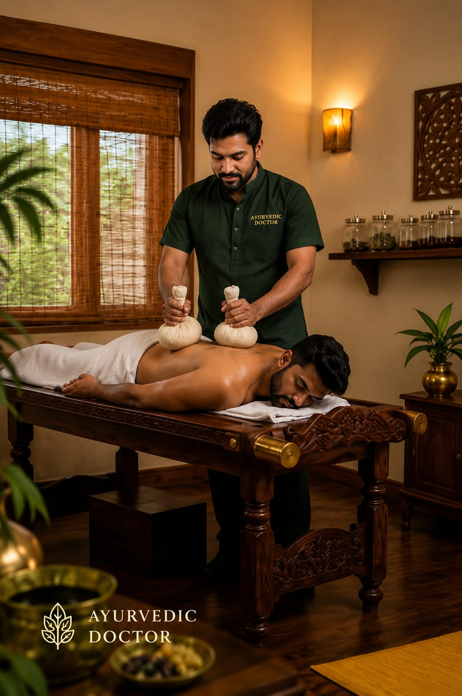

- Ayurvedic Doctors are medical professionals who use natural methods to treat different health conditions
- They use medicines prepared from herbs, plants, oils, and traditional Ayurvedic ingredients for treatments
- 👉 In simple words: Ayurvedic Doctors treat patients using natural medicines and therapies
Ayurvedic Doctor
🧑🎨 What Do They Do?

🎓 How to Become a Ayurvedic Doctor
These Ayurveda programs help students learn natural healing methods, herbal medicine preparation, Panchakarma therapy, human anatomy, and traditional Ayurvedic treatments.
BAMS (Bachelor of Ayurvedic Medicine and Surgery)
Duration: 5.5 Years (Includes Internship)
Eligibility: 12th Pass with Physics, Chemistry, and Biology (Minimum 50% Marks)
Entrance Exam: NEET-UG
Note: Ayurveda programs include classroom learning, herbal medicine studies, hospital training, practical treatments, and internships to prepare students for natural healthcare careers.
These advanced Ayurveda programs help students specialize in Ayurvedic medicine, Panchakarma therapy, research, teaching, and advanced traditional treatments.
MD (Ayurveda)
Duration: 3 Years
Eligibility: BAMS Graduate with Internship Completion
Entrance Exam: AIAPGET
MS (Ayurveda)
Duration: 3 Years
Eligibility: BAMS Graduate with Internship Completion
Entrance Exam: AIAPGET
Note: Advanced Ayurveda programs focus on specialized treatments, clinical practice, herbal research, patient care, and traditional healing therapies.
Note:
(Age limits, marks, and admission process may vary depending on the college or state. These courses are available in many colleges and universities across India. You can choose colleges based on your location, budget, and entrance exams.)
🏛️ Top Colleges & Institutes for Ayurveda in India
(Tap on a college to view details)
After 12th (Degrees & Professional Diplomas)
National Institute of Ayurveda (NIA), Jaipur Institute of Teaching and Research in Ayurveda (ITRA), Jamnagar Banaras Hindu University (BHU), Varanasi All India Institute of Ayurveda (AIIA), New Delhi Government Ayurveda College, Thiruvananthapuram Government Ayurveda College, Tripunithura (Ernakulam) State Ayurvedic College and Hospital, Lucknow Government Ayurvedic Medical College, Bengaluru Podar Ayurved Medical College, Mumbai Sri Dharmasthala Manjunatheshwara (SDM) College of Ayurveda, UdupiAfter Graduation (PG & Advanced Craft)
Institute of Teaching and Research in Ayurveda (ITRA), Jamnagar National Institute of Ayurveda (NIA), Jaipur All India Institute of Ayurveda (AIIA), New Delhi Banaras Hindu University (BHU), Varanasi Government Ayurveda College, Thiruvananthapuram Government Ayurveda College, Tripunithura (Ernakulam) Government Ayurvedic Medical College, Bengaluru State Ayurvedic College and Hospital, Lucknow Dr. Sarvepalli Radhakrishnan Rajasthan Ayurved University (DSRRAU), Jodhpur Sri Dharmasthala Manjunatheshwara (SDM) College of Ayurveda, UdupiSTEP 1
Imagine you are working as an Ayurvedic Doctor in an Ayurveda clinic or hospital.
STEP 2
Patients visit you with various health problems and seek natural treatments for recovery.
STEP 3
You examine the patient’s health condition and suggest herbal medicines, healthy diets, yoga, and natural treatments.
STEP 4
You may also perform therapies like Panchakarma to help patients heal naturally and improve their overall wellness.
STEP 5
You guide people towards healthier lifestyles and help them recover using traditional Ayurvedic practices.
STEP 6
If this method of treatment excites you, this career may suit you.
🌿
Ayurveda Hospitals
Treat patients using natural medicines and traditional therapies.
🩺
Ayurveda Clinics
Provide consultations, herbal medicines, and health advice.
🛁
Panchakarma Centres
Perform detoxification and healing therapies for patients.
💆
Wellness & Spa Centres
Help people improve health through relaxation and wellness therapies.
🏛️
Government Ayurveda Departments
Work in government hospitals and public healthcare departments.
🎓
Ayurveda Medical Colleges
Teach students and provide practical training.
🔬
Research Centres
Study herbal medicines and develop new treatments.
✈️
Abroad Opportunities
Work in wellness centres and alternative medicine clinics in different countries.
(Click Yes or No for each question)
1. Are you interested in learning about the human body?
2. Do you like helping people improve their health?
3. Are you interested in learning about natural medicines and herbal treatments?
4. Are you interested in learning traditional Indian methods of treatment?
5. Imagine a patient visiting you with back pain. You give natural medicines and perform Ayurvedic massage therapies to help the patient recover. Does this excite you?